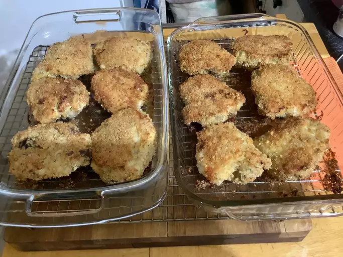

Oven Fried Chicken

Description
This recipe will use the oven to cut down on oil. The prep time will be
15 minutes with the cook time being 1 hr. This will serve 6 people and make
some delicious fried chicken. This can be used with 12 chicken thighs, or
your own combination of breasts, legs, wings, or drum sticks.
Ingredients
- 12 Chicken Thighs
- All Purpose Flour
- Bread Crumbs
- Eggs
- Seasonings like salt,pepper and paprika
- Oil like Vegetable oil
Steps
- Preheat the oven to 350 degrees F(175 degrees C)
- Place flour in a shallow plate or bowl and season with salt
and pepper to taste. Put bread crumbs in another shallow plate or bowl
and beat eggs in another bowl.
- Dredge chicken piece by piece in the flour, then the egg, then the bread crumbs, until
all pieces are coated.
- Pour oil into a large baking dish;add the breaded chicken thighs and sprinkle with paprika to taste
- Bake in the preheated oven for 30 minutes, then turn pieces over and bake for another 30 minutes.
Remove from the oven and drain on paper towels.
- Serve hot and enjoy!
Home